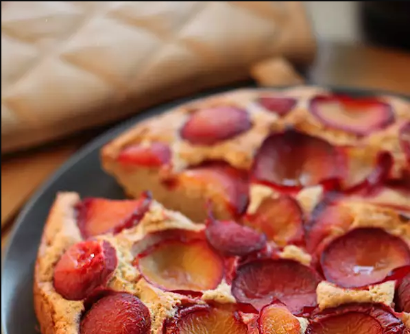

Plum Cake

Description
Plum Cake is one of the most popular varieties one can make at home. Some people also use brandy or rum-soaked dry fruits while making this cake; however, this cake is made by mixing the fruits and nuts in the cake batter. This Plum Cake is something a fruit cake enthusiast should try.
INGREDIENTS
- 250 gm refined flour
- 150 gm brown sugar
- 30 gm almonds
- 30 gm walnuts
- 1/4 cup milk
- 150 gm unsalted butter
- 1 teaspoon powdered cinnamon
- 100 gm prunes
- 5 drop vanilla essence
- 2 teaspoon baking powder
RECIPE
- Step 1 Sieve the flour and baking powder
Take a large bowl and sieve together the flour and the baking powder. Keep aside. Now, in another bowl, mix together the brown sugar and butter until the sugar dissolves completely. Take the help of an electric blender.
- Step 2 Prepare the cake batter and let it rest for 10 minutes
Now, break the eggs and add them one by one. Keep beating the mixture until it is light and frothy. Gradually add the flour to this egg-butter and sugar mixture spoon by spoon so that no lumps are formed. Keep stirring to attain a smooth mixture. Add the milk and the vanilla essence and mix well. Add cinnamon powder and blend again. Allow the batter to rest for 10 minutes.
- Step 3 Chop the nuts for the cake
Meanwhile, chop the nuts and the prunes finely. Mix in the batter and beat well. Reserve some nuts that you can put on top of the cake. Now, preheat the oven at 180 degrees for 15 minutes. Prepare a baking tray by lining it with butter paper. Grease it with oil or butter and dust some flour. Pour the batter in it.
- Step 4 Bake the cake for one hour
Bake the cake at 180 degrees Celsius for one hour or at 200 degrees Celsius for 45 minutes. The temperature mostly depends on the type of oven you have. Insert a skewer in the cake to check if it is ready. If it comes out clean, take out the cake and place it on a wire rack to cool.
- Step 5 Slice and serve the plum cake!
Carefully take the cake out from the baking tray. Slice it and serve with tea, coffee or with an assortment of snacks. This cake also goes well with vanilla ice-cream. You can also make a quick icing by beating together one cup icing sugar and one cup unsalted butter. Mix vigorously, until the mixture becomes creamy. Put it in the fridge for one hour. Now put it in the piping bag and use it to decorate the cake. If you want your icing to be colourful, you can divide this butter-sugar mixture into two parts and then add the two colours of your choice in both the parts. Put them in separate icing bags and use them to jazz up your cake. You can also use gems or chocolate chips to decorate your Christmas Plum Cake.
Back to the Recipes